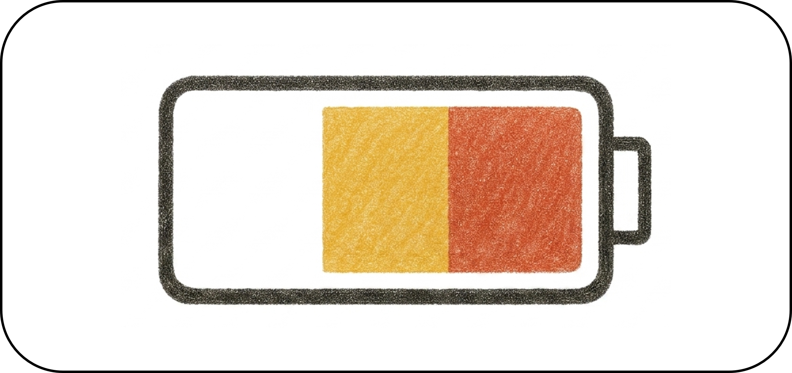
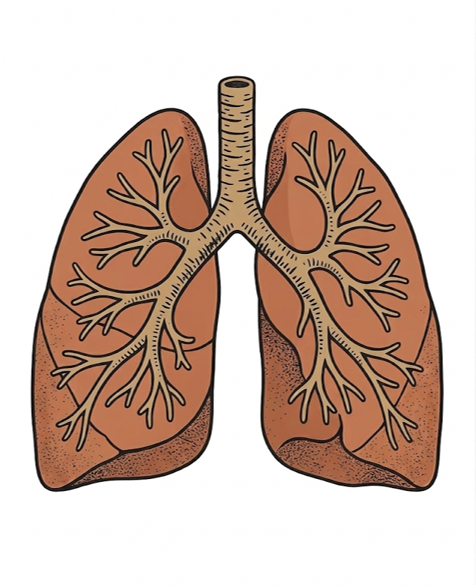

Enabling you to do more of what matters most to you.
Professional, independent Occupational Therapy tailored to your lifestyle, home, and workplace.
Specialist Occupational Therapy Services
A comprehensive, clinical approach to managing health conditions, restoring confidence, and improving daily functional independence.

Fatigue Management & Pacing
Fatigue can significantly impact daily life, work, and independence. We help you understand your energy patterns, identify triggers, and develop practical strategies to conserve energy. Together, we will build a balanced routine incorporating pacing plans and energy conservation techniques to support your activity, rest, and overall wellbeing.

Vocational Rehabilitation
Returning to work after illness or injury can feel overwhelming. We provide tailored support to help you regain confidence, adapt your work environment, and navigate the return-to-work process safely. Through functional capacity assessments and strategic advice, we help make work manageable and advise employers on reasonable workplace adjustments.

Breathlessness Management
Living with breathlessness can make everyday tasks challenging. We offer evidence-based management techniques—including pacing, breathing control, positioning, and anxiety reduction strategies. Our aim is to help you feel more in control of your symptoms, reduce anxiety, and improve your ability to participate in meaningful daily activities.

Rehabilitation
Our rehabilitation service focuses on helping you rebuild strength, confidence, and daily living independence following hospital discharge, prolonged illness, injury, or physical decline. Through personalized programmes, we support you in improving mobility, performing daily tasks, and achieving your personal goals—step by step, at your pace.

Equipment & Home Adaptations
Choosing the right equipment can transform daily life, making tasks safer and easier. We provide expert guidance and assessments for mobility aids, specialized seating, and home modifications (kitchen, bathroom) to ensure they fit your environment, support your goals, and enhance your daily living independence.

Reports & Application Support
We provide comprehensive clinical report writing for insurance, legal, benefits, or workplace accommodation needs. We also assist with completing complex applications, benefit forms, and accommodation paperwork to support your clinical and practical requirements.

Accessing Activities
Living with a health condition can affect your ability to participate in activities that are important, enjoyable, and meaningful to you—such as socialising, hobbies, or exercise. We work collaboratively with you to identify participation barriers and develop practical solutions, including activity adaptations and specialized equipment, so you can continue engaging in the activities that matter most.
What to Expect
A collaborative, client-focused process designed to support you from initial inquiry to final goals.
Initial Consultation
I offer a free 30-minute phone consultation to discuss your circumstances, answer initial questions, and ensure my independent clinical services align with your goals.
Home Assessment
I will visit you at home (or in your workplace) to complete a detailed physical and functional assessment of your environment, daily routines, and lifestyle goals.
Clinical Report & Plan
Following the assessment, I compile my observations and recommendations into a comprehensive report. This serves as a clinical guide and a practical roadmap for adaptations and treatment.
Follow-up Care
We will agree on the frequency and number of follow-up rehabilitation sessions based on your needs, adjusting them dynamically as you regain functional independence.
Please do contact me to discuss any other requirements or specific clinical support needs.
Arrange Phone ConsultationAbout Hannah
I am an HCPC-registered Occupational Therapist with over 17 years of post-registration experience. I am based near Harrogate and provide services across York, Leeds, Harrogate, Knaresborough, and Ripon.
I have worked as an Advanced Occupational Therapist across a wide range of clinical settings, including cancer care, palliative care, mental health services, cardiac and respiratory services, and chronic pain and fatigue management (including Long Covid rehabilitation).
Alongside my independent practice, I work in the NHS in a senior Occupational Therapy role within the Cardiology and Respiratory team. This includes the specialist assessment and rehabilitation of clients with post-viral conditions. My clinical approach is collaborative and person-centred, focusing on supporting individuals to achieve their goals and improve their quality of life.
Additional Training & Areas of Clinical Expertise
- Acceptance and Commitment Therapy (ACT)
- CBT-I for Insomnia
- Pain Management
- Anxiety Management
- Train-the-Trainer: Manual Handling
- Mental Health First Aid
- Motivational Interviewing
- Coaching Skills
Start Your Recovery Journey
Get in touch to discuss your requirements or arrange an initial consultation. I provide clinical occupational therapy services across York, Leeds, Harrogate, Knaresborough, Ripon, and surrounding local areas.
Service Area
York, Leeds, Harrogate, Knaresborough & Ripon
Professional Credentials
HCPC Registered: OT57543
17+ Years Post-Registration Experience
"Occupational therapy helps people live life to its fullest by promoting health, and preventing—or living better with—injury, illness, or disability."